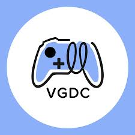
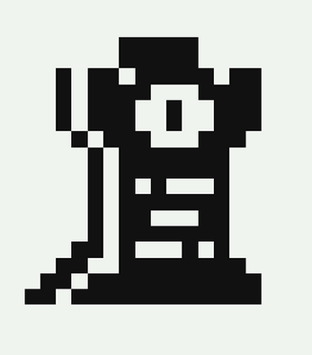

Every quarter I join a group of other UCI students and by the end of the quarter we try to make a videogame from ground up. All of the projects I have worked on can be found on itch: Winter 2025, Spring 2025, Fall 2025 (Continuing in Winter 2026)
Last year I participated in VGDC's game jam where we had a weekend to build a videogame based on a suprise topic. For my project because it was my first time I wanted to try out something. In this project I decided to try and implmenet Generative AI as part of a core game mechanic. For my game I decided it would be a game where two players submit responses and the AI chooses the funnier option however it wants to determine that. While Im not completely happy with how it turned out I am happy that I tired and I felt good learning the new skill of AI API calls and incorporatting it as a mechanic. You can play the game here (but you do need a chatgpt API key to play)
